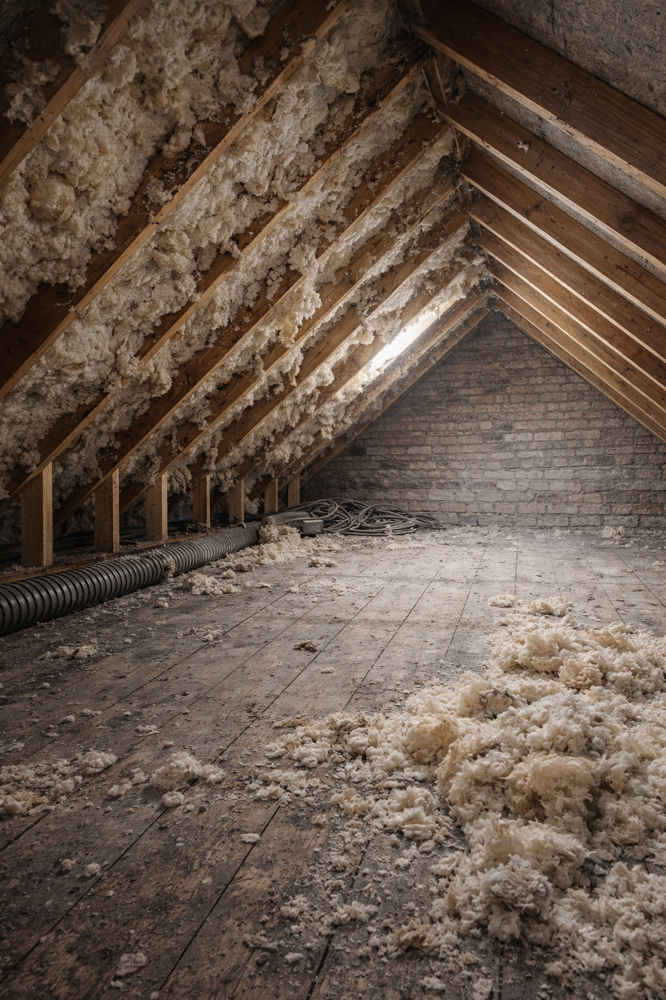
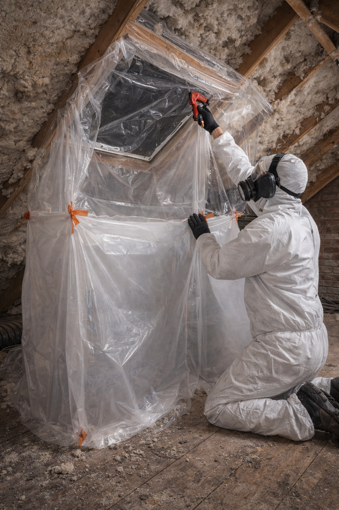
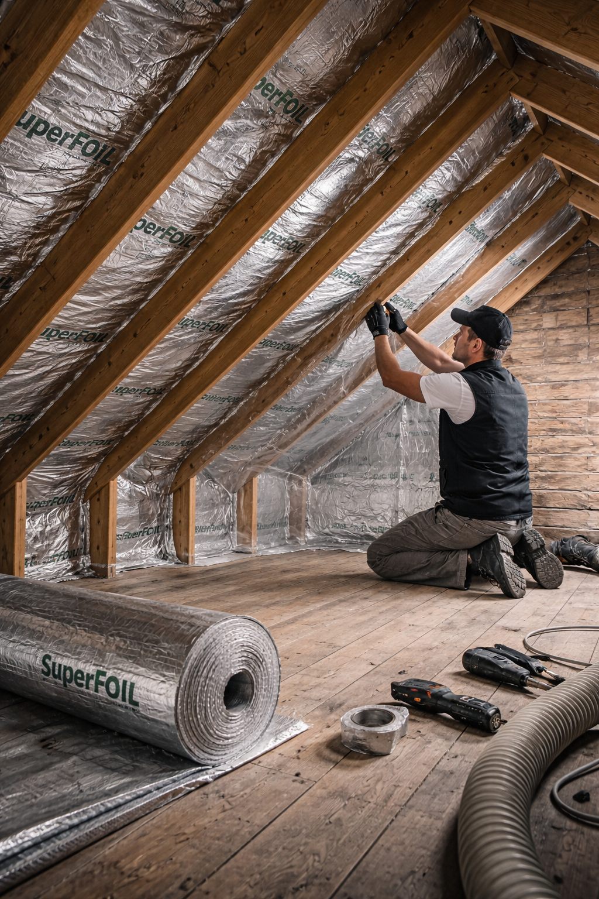

Insulation Removal & Upgrade Specialists
Helping homeowners resolve spray foam and insulation issues so properties are ready for survey, mortgage approval, sale or upgrade.
Restore roof structure access for surveys and mortgage approval.
Remove damp or failed insulation causing moisture issues.
Install modern insulation after safe removal.
Prepare properties for valuation, sale or remortgage.

Safe removal of spray foam insulation to restore access for surveys and mortgage approval.

Careful removal of problematic foam insulation, leaving loft spaces clean and ready for inspection or upgrade.

Modern insulation solutions installed after removal to improve thermal performance.
Spray foam and older insulation systems can cause issues during surveys, remortgages and property sales — particularly where access to roof timbers is restricted.
In some homes, these materials can also contribute to damp, trapped moisture or reduced airflow, making it harder to inspect or maintain the property long-term.
We review your property and identify the issue clearly.
Careful removal of problematic insulation materials.
All waste removed and property left ready for inspection.
Advice on insulation upgrades and future-proofing.
Spray foam insulation can restrict access to roof timbers and raise concerns during surveys, remortgages and property sales.
Clean, accessible loft spaces leave roof structures visible and ready for inspection, maintenance or insulation upgrades.
Whether it’s spray foam, cavity wall insulation or damp-related concerns, we can help you understand the problem and the next steps.
Send us a few photos of your loft or affected area and we’ll advise on likely next steps.
quotes@insofixltd.co.uk
info@insofixltd.co.uk
Serving Hampshire and surrounding areas.